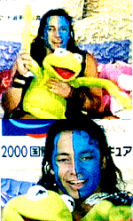
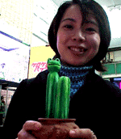
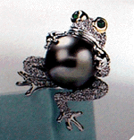

|
キャンディローロ様がカエルと！ カーミットと同席！決定的場面の画像ゲット！
 【日本発=ＴＡＭＡＭＩ様】フィリップ（フィリップ・キャンディローロ選手）とカエルが同席している場面の写真募集とうかがいましたので、送らせていただきます。電光スクリーンに映ったモノです。
カエル投げて選手を祝福せよ！【全国かえる奉賛会】おおーこれまで、決定的場面を捉えた画像は無いものと思っていたら、画像が届いて感激するぞお。フィリップ・キャンデローロ様は、男子フィギュアスケート界の貴公子と人気が高い選手で、この日は、前衛的なメイクをしているので、余計に、隣に座る巨大カーミットとのツーショットは、とっても素晴らしい映像になっている。平成12年1月10日号でのkei-f同志記者のレポート通りに、カーミットの右手をつかんで、ともに喜んでいるところがとってもいいぞ。
カエラーの諸君。カーミット投げ込み少女による英雄的カエル行為を見習って、大相撲、野球、プロレス、柔道の試合の折りに、カエルを投げ込んで選手を祝福しようではないかあ。 謎のカエルサボテン美少女を発見！ 【福岡発=げこげこ大王直筆】平成１１年8月12日号で捜索していた、謎のカエル美少女の消息がつかめ、このほど、大王とピノコ事務局長が、対面に成功したあああ。彼女は、福岡かえる展の会場に、謎のカエルサボテン（木彫一刀彫り）を展示し、会期終了後に作品を撤収した後、杳として行方が知れなかったのである。その作品があまりにもインパクトがあったため、カエル仲間で捜索していた。 謎のカエルサボテン美少女との一問一答---どーしてまた、カエルとサボテンを合体させたんですか？謎のカエルサボテン美少女；どちらも好きだったからです
---カエル歴とサボテン歴はどっちが長い？
---カエルサボテンを増産して、けろテン市場で販売してくれませんかああ？
 ティファニーのカエルピアスは２２０万円！【仙台発=ジョゼフィーヌクララ妃同志記者】大王様！かえる新聞平成１１年11月21日で話題になったティファニーのかえるピアスの相場わかりました〜〜〜！な、な、なんと・・・・220万円！仙台三越では取り扱ってない、とのこと！梅田三越で友人が価格情報を仕入れました模様です。。。【全国かえる奉賛会】カエラーな彼女を持つ彼氏にとっては、ちょっと衝撃的な価格であるが、愛があれば、きっと買ってくれるはずだ。婚約指輪といっしょに、ぜひともおねだりしてくれー。装着したら、記念写真を撮影しておくっれくれー。 カエル兄弟の歌が奉納さる！【東京発=M.Kiyomiya同志記者】かえるブラザ-ズのうたが完成したので、紹介します。作詞作曲；M.Kiyomiyaカエルッカエルッカエルッカエルッ、カエルッカエルッカエルッカエルッ、ブ-ラザ-ズ〜〜〜無事かえる〜、生きかえる〜、振りかえる〜、若かえる〜、良いのにかえる〜、かんがえる〜 カエルッカエルッカエルッカエルッ、カエルッカエルッカエルッカエルッ、ブ-ラザ-ズ〜 ひっくりかえる〜、よみがえる〜、なんでもかえる〜、たまごも孵る〜、かえるも飼える〜
カエルッカエルッカエルッカエルッ、カエルッカエルッカエルッカエルッ、ブ-ラザ-ズ〜 カワイク、元気よく歌うのがポイントです＾＾
カエルショップのＨＰが完成！【福岡発=かえる店長同志記者】さぶい日が続いておりますがみなさまいかがお過ごしでしょうか？さて、待望の？リビット リビットのホームページほんの少しですがアップロードいたしました。これからぼちぼち建設してゆきますのでときどきのぞいてください。なにか問題があったらお知らせ下さい。発売開始は１月末か？モロー携帯ストラップ【福岡発=モローの娘・弟子・りょうこ同志記者】第１期、２期の分譲が大好評のうちに完売したモロー君の携帯ストラップを、さらに増産しています。そろそろバレンタインデーも近いし、ぜひ彼氏にモロー君をプレゼントしましょう！！まもなく発売開始です。
けろテン市場を引き続きチェックしよう。またモロー寺井師匠作のモロー像も同時発売になるかもしれません。
投稿採用者に武功カエル徽章を授与！ |
かえる古新聞過去に取り上げた記事を見出し付きで一覧したい人は、ここをクリック◆創刊号を見る◆先週号を見る◆話題の号を見る◆かえる新聞の昔を読む
|
私も入っています。。全国かえる奉賛会
大王様に会うには、このバナーをクリック。ずっと奥に写真館があるぞ。全国かえる奉賛会に入会するには、自分のホームページのどこかに、下の部分を追加するとバナーがリンク付きで表示されるぞ。どんどん入会しましょー |


|